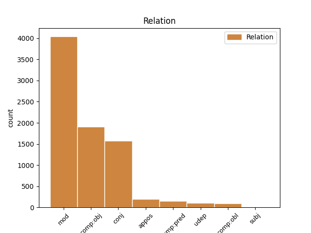
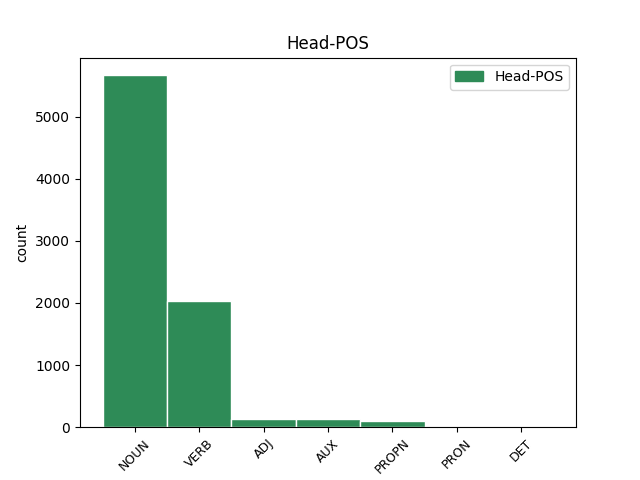
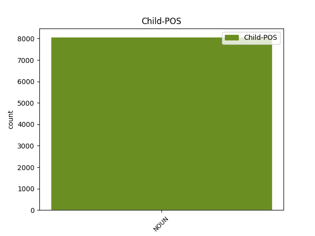

Distribution of features within this leaf



Agreement Rules sorted by frequency.
- When the dependent token is the modifer(mod) of the head token, and the dependent token is NOUN.
1 Generalni _ _ _ _ 0 _ _ _
2 direktor direktor NOUN Ncmsn Case=Nom|Gender=Masc|Number=Sing 0 _ _ _
3 Mednarodnega _ _ _ _ 0 _ _ _
4 sklada sklad NOUN Ncmsg Case=Gen|Gender=Masc|Number=Sing 2 mod _ Dep=2|Rel=Atr
5 je _ _ _ _ 0 _ _ _
6 ponavadi _ _ _ _ 0 _ _ _
7 Evropejec _ _ _ _ 0 _ _ _
8 , _ _ _ _ 0 _ _ _
9 Svetovno _ _ _ _ 0 _ _ _
10 banko _ _ _ _ 0 _ _ _
11 pa _ _ _ _ 0 _ _ _
12 vodi _ _ _ _ 0 _ _ _
13 Američan _ _ _ _ 0 _ _ _
14 . _ _ _ _ 0 _ _ _
1 Evropski _ _ _ _ 0 _ _ _
2 finančni _ _ _ _ 0 _ _ _
3 ministri _ _ _ _ 0 _ _ _
4 so _ _ _ _ 0 _ _ _
5 prepričani _ _ _ _ 0 _ _ _
6 , _ _ _ _ 0 _ _ _
7 da _ _ _ _ 0 _ _ _
8 ima _ _ _ _ 0 _ _ _
9 izbrani _ _ _ _ 0 _ _ _
10 kandidat _ _ _ _ 0 _ _ _
11 dovolj _ _ _ _ 0 _ _ _
12 izkušenj izkušnja NOUN Ncfpg Case=Gen|Gender=Fem|Number=Plur 0 _ _ _
13 in _ _ _ _ 0 _ _ _
14 sposobnosti sposobnost NOUN Ncfpg Case=Gen|Gender=Fem|Number=Plur 12 conj _ Dep=12|Rel=Coord
15 za _ _ _ _ 0 _ _ _
16 tako _ _ _ _ 0 _ _ _
17 pomemben _ _ _ _ 0 _ _ _
18 položaj _ _ _ _ 0 _ _ _
19 . _ _ _ _ 0 _ _ _
1 KOČEVJE _ _ _ _ 0 _ _ _
2 Iz _ _ _ _ 0 _ _ _
3 Kočevja _ _ _ _ 0 _ _ _
4 proti _ _ _ _ 0 _ _ _
5 Ljubljani _ _ _ _ 0 _ _ _
6 v _ _ _ _ 0 _ _ _
7 prihodnje _ _ _ _ 0 _ _ _
8 ne _ _ _ _ 0 _ _ _
9 bodo _ _ _ _ 0 _ _ _
10 vozili voziti VERB Vmpp-pm Aspect=Imp|Gender=Masc|Number=Plur|VerbForm=Part 0 _ _ _
11 zgolj _ _ _ _ 0 _ _ _
12 les les NOUN Ncmsan Animacy=Inan|Case=Acc|Gender=Masc|Number=Sing 10 comp:obj _ Dep=10|Rel=Obj|SpaceAfter=No
13 , _ _ _ _ 0 _ _ _
14 neprecenljivo _ _ _ _ 0 _ _ _
15 bogastvo _ _ _ _ 0 _ _ _
16 poraščene _ _ _ _ 0 _ _ _
17 pokrajine _ _ _ _ 0 _ _ _
18 tik _ _ _ _ 0 _ _ _
19 ob _ _ _ _ 0 _ _ _
20 hrvaški _ _ _ _ 0 _ _ _
21 meji _ _ _ _ 0 _ _ _
22 , _ _ _ _ 0 _ _ _
23 gneča _ _ _ _ 0 _ _ _
24 na _ _ _ _ 0 _ _ _
25 cesti _ _ _ _ 0 _ _ _
26 bo _ _ _ _ 0 _ _ _
27 tudi _ _ _ _ 0 _ _ _
28 zaradi _ _ _ _ 0 _ _ _
29 povečane _ _ _ _ 0 _ _ _
30 zmogljivosti _ _ _ _ 0 _ _ _
31 pri _ _ _ _ 0 _ _ _
32 proizvodnji _ _ _ _ 0 _ _ _
33 najbolj _ _ _ _ 0 _ _ _
34 znanih _ _ _ _ 0 _ _ _
35 slovenskih _ _ _ _ 0 _ _ _
36 sirov _ _ _ _ 0 _ _ _
37 . _ _ _ _ 0 _ _ _
1 V _ _ _ _ 0 _ _ _
2 zadnjih _ _ _ _ 0 _ _ _
3 petindvajsetih _ _ _ _ 0 _ _ _
4 letih _ _ _ _ 0 _ _ _
5 življenja _ _ _ _ 0 _ _ _
6 je _ _ _ _ 0 _ _ _
7 bil biti AUX Va-p-sm Gender=Masc|Number=Sing|VerbForm=Part 0 _ _ _
8 Leonardo _ _ _ _ 0 _ _ _
9 da _ _ _ _ 0 _ _ _
10 Vinci _ _ _ _ 0 _ _ _
11 - _ _ _ _ 0 _ _ _
12 čigar _ _ _ _ 0 _ _ _
13 550. _ _ _ _ 0 _ _ _
14 obletnico _ _ _ _ 0 _ _ _
15 praznujemo _ _ _ _ 0 _ _ _
16 letos _ _ _ _ 0 _ _ _
17 - _ _ _ _ 0 _ _ _
18 vse _ _ _ _ 0 _ _ _
19 manj _ _ _ _ 0 _ _ _
20 slikar slikar NOUN Ncmsn Case=Nom|Gender=Masc|Number=Sing 7 comp:pred _ Dep=7|Rel=Atr
21 in _ _ _ _ 0 _ _ _
22 čedalje _ _ _ _ 0 _ _ _
23 bolj _ _ _ _ 0 _ _ _
24 znanstvenik _ _ _ _ 0 _ _ _
25 . _ _ _ _ 0 _ _ _
1 Čustveno _ _ _ _ 0 _ _ _
2 nabito _ _ _ _ 0 _ _ _
3 Hugojevo _ _ _ _ 0 _ _ _
4 dramo _ _ _ _ 0 _ _ _
5 v _ _ _ _ 0 _ _ _
6 bogati _ _ _ _ 0 _ _ _
7 Verdijevi _ _ _ _ 0 _ _ _
8 melodiki melodika NOUN Ncfsl Case=Loc|Gender=Fem|Number=Sing 0 _ _ _
9 ( _ _ _ _ 0 _ _ _
10 romantična _ _ _ _ 0 _ _ _
11 opera opera NOUN Ncfsn Case=Nom|Gender=Fem|Number=Sing 8 appos _ Dep=0|Rel=Root
12 v _ _ _ _ 0 _ _ _
13 štirih _ _ _ _ 0 _ _ _
14 dejanjih _ _ _ _ 0 _ _ _
15 in _ _ _ _ 0 _ _ _
16 petih _ _ _ _ 0 _ _ _
17 slikah _ _ _ _ 0 _ _ _
18 ) _ _ _ _ 0 _ _ _
19 zaokrožujejo _ _ _ _ 0 _ _ _
20 orkester _ _ _ _ 0 _ _ _
21 , _ _ _ _ 0 _ _ _
22 zbor _ _ _ _ 0 _ _ _
23 in _ _ _ _ 0 _ _ _
24 statisti _ _ _ _ 0 _ _ _
25 ansambla _ _ _ _ 0 _ _ _
26 Opere _ _ _ _ 0 _ _ _
27 in _ _ _ _ 0 _ _ _
28 baleta _ _ _ _ 0 _ _ _
29 SNG _ _ _ _ 0 _ _ _
30 Maribor _ _ _ _ 0 _ _ _
31 . _ _ _ _ 0 _ _ _
1 Z _ _ _ _ 0 _ _ _
2 izboljšavami _ _ _ _ 0 _ _ _
3 urejevalnika _ _ _ _ 0 _ _ _
4 in _ _ _ _ 0 _ _ _
5 novimi _ _ _ _ 0 _ _ _
6 pripomočki _ _ _ _ 0 _ _ _
7 za _ _ _ _ 0 _ _ _
8 predelavo _ _ _ _ 0 _ _ _
9 kode _ _ _ _ 0 _ _ _
10 so _ _ _ _ 0 _ _ _
11 JBX _ _ _ _ 0 _ _ _
12 izpilili _ _ _ _ 0 _ _ _
13 v _ _ _ _ 0 _ _ _
14 izdelek _ _ _ _ 0 _ _ _
15 , _ _ _ _ 0 _ _ _
16 ki _ _ _ _ 0 _ _ _
17 bo _ _ _ _ 0 _ _ _
18 lahko _ _ _ _ 0 _ _ _
19 še _ _ _ _ 0 _ _ _
20 nekaj _ _ _ _ 0 _ _ _
21 časa čas NOUN Ncmsg Case=Gen|Gender=Masc|Number=Sing 22 udep _ Dep=22|Rel=AdvO
22 ohranjal ohranjati VERB Vmpp-sm Aspect=Imp|Gender=Masc|Number=Sing|VerbForm=Part 0 _ _ _
23 primat _ _ _ _ 0 _ _ _
24 na _ _ _ _ 0 _ _ _
25 trgu _ _ _ _ 0 _ _ _
26 . _ _ _ _ 0 _ _ _
1 Vozniku voznik NOUN Ncmsd Case=Dat|Gender=Masc|Number=Sing 29 comp:obl _ Dep=29|Rel=Obj|SpaceAfter=No
2 , _ _ _ _ 0 _ _ _
3 ki _ _ _ _ 0 _ _ _
4 je _ _ _ _ 0 _ _ _
5 uspešno _ _ _ _ 0 _ _ _
6 opravil _ _ _ _ 0 _ _ _
7 seminar _ _ _ _ 0 _ _ _
8 o _ _ _ _ 0 _ _ _
9 varnosti _ _ _ _ 0 _ _ _
10 cestnega _ _ _ _ 0 _ _ _
11 prometa _ _ _ _ 0 _ _ _
12 , _ _ _ _ 0 _ _ _
13 o _ _ _ _ 0 _ _ _
14 čemer _ _ _ _ 0 _ _ _
15 morajo _ _ _ _ 0 _ _ _
16 senat _ _ _ _ 0 _ _ _
17 za _ _ _ _ 0 _ _ _
18 prekrške _ _ _ _ 0 _ _ _
19 obvestiti _ _ _ _ 0 _ _ _
20 vodje _ _ _ _ 0 _ _ _
21 seminarjev _ _ _ _ 0 _ _ _
22 , _ _ _ _ 0 _ _ _
23 bodo _ _ _ _ 0 _ _ _
24 od _ _ _ _ 0 _ _ _
25 skupnega _ _ _ _ 0 _ _ _
26 števila _ _ _ _ 0 _ _ _
27 kazenskih _ _ _ _ 0 _ _ _
28 točk _ _ _ _ 0 _ _ _
29 odšteli odšteti VERB Vmep-pm Aspect=Perf|Gender=Masc|Number=Plur|VerbForm=Part 0 _ _ _
30 štiri _ _ _ _ 0 _ _ _
31 točke _ _ _ _ 0 _ _ _
32 . _ _ _ _ 0 _ _ _
1 — _ _ _ _ 0 _ _ _
2 Beli _ _ _ _ 0 _ _ _
3 labod labod NOUN Ncmsn Case=Nom|Gender=Masc|Number=Sing 6 subj _ Dep=6|Rel=Sb
4 neb _ _ _ _ 0 _ _ _
5 nikol _ _ _ _ 0 _ _ _
6 izkoristu izkoristiti VERB Vmep-sm Aspect=Perf|Gender=Masc|Number=Sing|VerbForm=Part 0 _ _ _
7 dame _ _ _ _ 0 _ _ _
8 v _ _ _ _ 0 _ _ _
9 stiski _ _ _ _ 0 _ _ _
10 , _ _ _ _ 0 _ _ _
11 se _ _ _ _ 0 _ _ _
12 zareži _ _ _ _ 0 _ _ _
13 . _ _ _ _ 0 _ _ _
Disagree Examples:
1 Dogodek dogodek NOUN Ncmsn Case=Nom|Gender=Masc|Number=Sing 5 comp:pred _ Dep=5|Rel=Atr
2 v _ _ _ _ 0 _ _ _
3 Ankaranu _ _ _ _ 0 _ _ _
4 je _ _ _ _ 0 _ _ _
5 bila biti AUX Va-p-sf Gender=Fem|Number=Sing|VerbForm=Part 0 _ _ _
6 dramatična _ _ _ _ 0 _ _ _
7 nesreča _ _ _ _ 0 _ _ _
8 . _ _ _ _ 0 _ _ _
1 Dogodki _ _ _ _ 0 _ _ _
2 v _ _ _ _ 0 _ _ _
3 prihodnjih _ _ _ _ 0 _ _ _
4 mesecih _ _ _ _ 0 _ _ _
5 pa _ _ _ _ 0 _ _ _
6 bodo _ _ _ _ 0 _ _ _
7 pokazali _ _ _ _ 0 _ _ _
8 , _ _ _ _ 0 _ _ _
9 ali _ _ _ _ 0 _ _ _
10 bo _ _ _ _ 0 _ _ _
11 morilcu morilec NOUN Ncmsd Case=Dat|Gender=Masc|Number=Sing 15 comp:obj _ Dep=15|Rel=Obj
12 iz _ _ _ _ 0 _ _ _
13 Ankarana _ _ _ _ 0 _ _ _
14 tokrat _ _ _ _ 0 _ _ _
15 uspelo uspeti VERB Vmep-sn Aspect=Perf|Gender=Neut|Number=Sing|VerbForm=Part 0 _ _ _
16 prepričati _ _ _ _ 0 _ _ _
17 italijanske _ _ _ _ 0 _ _ _
18 pravosodne _ _ _ _ 0 _ _ _
19 oblasti _ _ _ _ 0 _ _ _
20 . _ _ _ _ 0 _ _ _
1 V _ _ _ _ 0 _ _ _
2 bolnišnici _ _ _ _ 0 _ _ _
3 bodo _ _ _ _ 0 _ _ _
4 uvedli _ _ _ _ 0 _ _ _
5 tudi _ _ _ _ 0 _ _ _
6 s _ _ _ _ 0 _ _ _
7 šolo _ _ _ _ 0 _ _ _
8 za _ _ _ _ 0 _ _ _
9 starše _ _ _ _ 0 _ _ _
10 , _ _ _ _ 0 _ _ _
11 ki _ _ _ _ 0 _ _ _
12 je _ _ _ _ 0 _ _ _
13 namenjena _ _ _ _ 0 _ _ _
14 vzgoji vzgoja NOUN Ncfsd Case=Dat|Gender=Fem|Number=Sing 0 _ _ _
15 in _ _ _ _ 0 _ _ _
16 izobraževanju izobraževanje NOUN Ncnsd Case=Dat|Gender=Neut|Number=Sing 14 conj _ Dep=14|Rel=Coord
17 nosečnic _ _ _ _ 0 _ _ _
18 in _ _ _ _ 0 _ _ _
19 njihovih _ _ _ _ 0 _ _ _
20 partnerjev _ _ _ _ 0 _ _ _
21 . _ _ _ _ 0 _ _ _
1 V _ _ _ _ 0 _ _ _
2 bolnišnici _ _ _ _ 0 _ _ _
3 bodo _ _ _ _ 0 _ _ _
4 uvedli _ _ _ _ 0 _ _ _
5 tudi _ _ _ _ 0 _ _ _
6 s _ _ _ _ 0 _ _ _
7 šolo _ _ _ _ 0 _ _ _
8 za _ _ _ _ 0 _ _ _
9 starše _ _ _ _ 0 _ _ _
10 , _ _ _ _ 0 _ _ _
11 ki _ _ _ _ 0 _ _ _
12 je _ _ _ _ 0 _ _ _
13 namenjena _ _ _ _ 0 _ _ _
14 vzgoji _ _ _ _ 0 _ _ _
15 in _ _ _ _ 0 _ _ _
16 izobraževanju izobraževanje NOUN Ncnsd Case=Dat|Gender=Neut|Number=Sing 0 _ _ _
17 nosečnic nosečnica NOUN Ncfpg Case=Gen|Gender=Fem|Number=Plur 16 mod _ Dep=16|Rel=Atr
18 in _ _ _ _ 0 _ _ _
19 njihovih _ _ _ _ 0 _ _ _
20 partnerjev _ _ _ _ 0 _ _ _
21 . _ _ _ _ 0 _ _ _
1 V _ _ _ _ 0 _ _ _
2 bolnišnici _ _ _ _ 0 _ _ _
3 bodo _ _ _ _ 0 _ _ _
4 uvedli _ _ _ _ 0 _ _ _
5 tudi _ _ _ _ 0 _ _ _
6 s _ _ _ _ 0 _ _ _
7 šolo _ _ _ _ 0 _ _ _
8 za _ _ _ _ 0 _ _ _
9 starše _ _ _ _ 0 _ _ _
10 , _ _ _ _ 0 _ _ _
11 ki _ _ _ _ 0 _ _ _
12 je _ _ _ _ 0 _ _ _
13 namenjena _ _ _ _ 0 _ _ _
14 vzgoji _ _ _ _ 0 _ _ _
15 in _ _ _ _ 0 _ _ _
16 izobraževanju _ _ _ _ 0 _ _ _
17 nosečnic nosečnica NOUN Ncfpg Case=Gen|Gender=Fem|Number=Plur 0 _ _ _
18 in _ _ _ _ 0 _ _ _
19 njihovih _ _ _ _ 0 _ _ _
20 partnerjev partner NOUN Ncmpg Case=Gen|Gender=Masc|Number=Plur 17 conj _ Dep=17|Rel=Coord|SpaceAfter=No
21 . _ _ _ _ 0 _ _ _